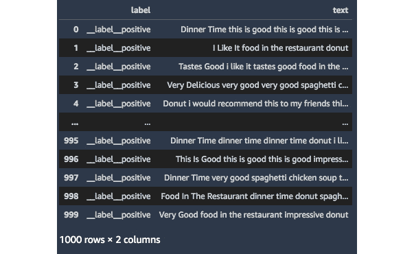
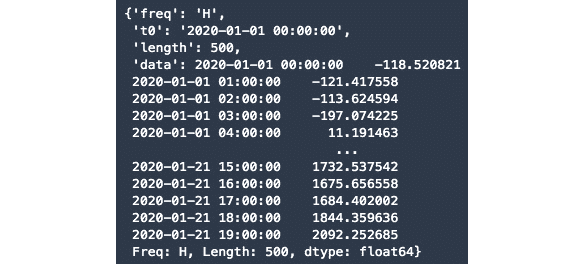

第八章:用内置算法解决自然语言处理、图像分类和时间序列预测问题
在前一章中，我们详细了解了SageMaker的几项功能，例如 SageMaker功能商店、 SageMaker Clarify 和 SageMaker模型监视器。这些能力帮助机器学习实践者在进行生产级机器学习实验和部署时处理相关需求。在本章中，我们将看看如何使用SageMaker内置算法来解决自然语言处理 ( NLP )、图像分类和时间序列预测问题。
图8.1–使用内置算法处理文本分类、图像分类和时间序列预测问题
如图8.1 所示，我们将看看如何使用 BlazingText 来解决最常见的自然语言处理问题之一——文本分类。除此之外，我们还将进一步了解如何使用内置的图像分类算法来解决MNIST手写数字数据集的图像分类问题。我们也将有机会使用内置的 DeepAR预测算法来解决时间序列预测问题。
也就是说，我们将在本章中介绍以下食谱:
- 为文本分类问题生成合成数据集
- 为批量转换推理作业准备测试数据集
- 培训和部署一个 BlazingText 模型
- 使用批量转换进行推理
- 使用 Apache MXNet 视觉数据集类为图像分类准备数据集
- 使用SageMaker中内置的图像分类算法训练和部署图像分类器
- 生成合成时间序列数据集
- 对时间序列数据集执行训练测试分割
- 训练和部署一个 DeepAR 模型
- 使用部署的 DeepAR 模型执行概率预测
在我们完成本章中的食谱之后，我们将能够利用SageMaker中的内置算法更加自信地解决NLP、图像分类和时间序列预测问题和需求。
技术要求
要执行本章中的配方，请确保您具备以下条件:
- 一个亚马逊S3桶
- 管理亚马逊SageMaker 和亚马逊S3 资源的权限，如果使用带有自定义URL的 AWS IAM 用户。如果你使用的是根帐户，那么你应该能够继续本章的食谱。但是，在大多数情况下，建议以AWS IAM用户身份登录，而不是使用root帐户。要了解更多信息，请随意查看以下指南:https://docs . AWS . Amazon . com/IAM/latest/user guide/best-practices . html。
由于本章中的食谱涉及到一些代码，我们在这个资源库中提供了笔记本:https://github . com/packt publishing/Machine-Learning-with-Amazon-sage maker-Cookbook/tree/master/chapter 08。在开始本章的每一个食谱之前，确保my-experiments/chapter08目录已经准备好。如果它还没有被创建，请现在就创建，因为这样可以在我们浏览本书中的每一个食谱时保持事物的有序性。
请点击以下链接查看动作视频中的相关代码:
为文本分类问题生成合成数据集
在这个配方中，我们将为一个二进制文本分类问题生成一个合成数据集。这个配方中要生成的数据集有两个主要字段:包含字符串格式语句的文本字段和指定文本是正数还是负数的目标标签。
图8.2-文本分类问题的合成数据集
在图8.2 中，我们可以看到带正标签的句子有_ _ label _ _正标签，而带负标签的句子有_ _ label _ _负标签。我们将在接下来的菜谱中使用这个数据集来训练和部署一个 BlazingText 模型，以解决一个情感分析需求。
做好准备
运行 Python 3(数据科学)内核的 SageMaker Studio 笔记本是这个食谱的唯一先决条件。
怎么做…
该配方中的第一步主要是生成一系列肯定和否定语句，并将它们存储在数据帧中:
- Create a new notebook using the Python 3 (Data Science) kernel inside the my-experiments/chapter08 directory and rename it with the name of this recipe.
图8.3–创建新笔记本
在图8.3 中，我们可以看到如何从文件菜单新建一个笔记本。当提示使用哪个内核时，选择 Python 3(数据科学)。
- Install faker using the pip install command:
!pip install faker
Faker 是一个 Python包，帮助提供生成假数据的实用函数。稍后，我们将使用sentence()函数根据单词列表生成一个假句子。
- 使用下面几行代码初始化faker】
- Define a list of strings that will be used in a later step to generate the sentences classified as POSITIVE:
positive_custom_list = [ 'this is good', 'i like it', 'very delicious', 'i would recommend this to my friends', 'food in the restaurant', 'spaghetti chicken soup', 'dinner time', 'tastes good', 'donut', 'very good', 'impressive']
这里我们可以看到这个字符串列表包含了通常被认为是正的记号。
- 定义generate_positive_sentences()函数。在内部，该函数使用faker.sentence()函数，该函数利用了我们在上一步中定义的positive_custom_list变量:
def generate_positive_sentences(): return faker.sentence( ext_word_list=positive_custom_list )
- Next, define a list of strings that will be used in a later step to generate the sentences classified as NEGATIVE:
negative_custom_list = [ 'this is bad', 'i hate it', 'there are better restaurants out there', 'i will not recommend this to my friends', 'food in the restaurant', 'spaghetti chicken soup', 'dinner time', 'tastes bad', 'donut', 'very bad', 'not impressive']
在这里，我们可以看到这个字符串列表包含了通常被认为是负数的标记。
- 定义generate_negative_sentences()函数。在内部，该函数使用faker.sentence()函数，该函数使用我们在上一步中定义的negative_custom_list列表:
def generate_negative_sentences(): return faker.sentence( ext_word_list=negative_custom_list )
- 使用下面的代码块生成1000个肯定句，并将它们存储在肯定句列表中:
positive_sentences = [] for i in range(0, 1000): item = generate_positive_sentences() item = item.replace(".", "") positive_sentences.append(item) - Inspect the positive_sentences variable:
positive_sentences
这应该会给我们一个类似于图8.4 中所示的字符串列表。
图8.4-生成的肯定句列表
在图8.4 中，我们有generate_positive_sentences()函数生成的字符串列表。
- Similarly, generate 1000 NEGATIVE sentences using the following block of code and store them in the negative_sentences list variable:
negative_sentences = [] for i in range(0, 1000): item = generate_negative_sentences() item = item.replace(".", "") negative_sentences.append(item)这应该会给我们一个类似于图8.5 中所示的字符串列表。
图8.5-生成的否定句列表
在图8.5 中，我们可以看到使用generate_negative_sentences()函数生成的句子列表。
- Prepare the DataFrame containing the POSITIVE sentences using the following block of code:
import pandas as pd positive_df = pd.DataFrame( positive_sentences, columns=['text'] ) positive_df.insert( 0, "label", "__label__positive" )
图8.6-包含肯定句的数据框架
这里，我们有包含_ _ label _ _正字符串的标签列。
- Next, prepare the DataFrame containing the NEGATIVE sentences using the following lines of code:
negative_df = pd.DataFrame( negative_sentences, columns=['text'] ) negative_df.insert( 0, "label", "__label__negative" )
图8.7-包含否定句的数据框架
这里，我们有包含_ _ label _ _负字符串的标签列。
- Merge the two DataFrames using the concat() function:
all_df = pd.concat( [positive_df, negative_df], ignore_index=True )
- Perform the train-validation-test split on all_df:
from sklearn.model_selection import train_test_split train_val_df, test_df = train_test_split( all_df, test_size=0.2 ) train_df, val_df = train_test_split( train_val_df, test_size=0.25 )
这将为我们提供600条训练集记录(train_df)，200条验证集记录(val_df)，以及200条测试集记录(test_df)。
- Export the DataFrames into their corresponding CSV files using the to_csv() function:
!mkdir tmp train_df.to_csv( "tmp/synthetic.train.txt", header=False, index=False, sep=" ", quotechar=" " ) val_df.to_csv( "tmp/synthetic.validation.txt", header=False, index=False, sep=" ", quotechar=" " ) test_df.to_csv( "tmp/synthetic.test.txt", header=False, index=False, sep=" ", quotechar=" " )
- Inspect the contents of the synthetic.train.txt file inside the tmp directory:
!head tmp/synthetic.train.txt
这将给我们类似于图8.8 中所示的文本行。
s3_bucket = "<insert bucket name here>" prefix = "chapter08" !aws s3 cp tmp/synthetic.train.txt s3://{s3_bucket}/{prefix}/input/synthetic.train.txt !aws s3 cp tmp/synthetic.validation.txt s3://{s3_bucket}/{prefix}/input/synthetic.validation.txt - Finally, use the %store magic to store the variable values for test_df, s3_bucket, and prefix:
%store test_df %store s3_bucket %store prefix
我们将在后面的菜谱中使用这些变量值。
工作原理……
在这个配方中，我们已经生成了将在本章接下来的三个配方中使用的合成数据集。与本书中生成的其他合成数据集相比，我们生成了一个合成数据集，其中包含该配方中的文本数据，而不是表格和数字数据。
我们生成的数据集有两个主要字段:(1)包含字符串格式语句的文本字段，以及(2)目标标签，可以是__label__positive或__label__negative。标签有__label__前缀很重要，因为我们计划在配方中以文件模式训练一个 BlazingText 模型训练和部署一个BlazingText模型。注意，我们并不局限于在这个数据集中只有两个类。如果我们希望在这个配方的基础上构建，一个例子是有三个类而不是两个——_ _ label _ _ positive、__label__neutral和_ _ label _ _ neutral。当然，在使用特定算法运行训练作业之前，我们需要确保相应地更新配置和超参数值。
还有更多……
我们还可以选择使用增强清单文本格式作为来存储和导出合成数据集。这在训练blazing text模型时也应该有效。这涉及到使用JSON Lines格式，其中文件中的每一行都包含一个有效的JSON值，类似于下面的代码块所示:
{"source":"i will not recommend this", "label":0}
{"source":"i would recommend this", "label":1}
使用增强清单文本格式的一个优点是，我们可以在管道输入模式下训练模型，其中数据集直接流向训练实例。在 第4章 、准备、处理和分析数据中的将CSV数据转换为protobuf recordIO格式中，我们提到当我们的数据被序列化为protobuf recordIO格式时，我们可以在训练期间使用管道模式。在这种情况下，只要我们的数据使用增强的清单文本格式，我们将能够使用管道模式，即使不必将我们的数据序列化为protobuf recordIO格式。
为批量转换推理作业准备测试数据集
在这个配方中，我们将使用批处理转换进行推理来准备将在配方中使用的测试数据集，这利用了SageMaker的批处理转换功能。使用批量转换，我们可以同时对多条记录执行推理，而无需运行持久端点。
图8.9-包含JSON行格式的测试数据的文本文件
请注意，当使用批量转换和 BlazingText 模型时，输入测试数据集采用jsonlines格式是很重要的。正如我们在图8.9 中看到的，文件中的每一行都是一个有效的JSON值。
做好准备
以下是这个食谱的先决条件:
- 这种方法上接为文本分类问题生成合成数据集。
- 运行 Python 3(数据科学)内核的 SageMaker Studio 笔记本。
怎么做……
该配方中的步骤主要是将数据从之前的配方转换成jsonlines格式，并将结果文件上传到S3:
- 在my-experiments/chapter08目录中使用Python 3(数据科学)内核创建一个新的笔记本，并将其重命名为这个食谱的名称。当提示使用内核时，选择 Python 3(数据科学)。
- 使用%store magic加载test_df、s3_bucket和prefix的变量值:
%store -r test_df %store -r s3_bucket %store -r prefix
- 使用drop()函数删除标签列:
test_df_without_label = test_df.drop( columns="label" )
- Define the to_jsonlines() function:
def to_jsonlines(text): return '{"source": "' + text +'"}'注意
请注意，在这个菜谱中，我们展示了一种将我们所拥有的内容转换成JSON行格式的方法。还可以使用to_json()函数将lines设置为True，将DataFrame转换为jsonlines格式。
- Use the apply() function to convert each cell in the text column to jsonlines format. Next, check how the test_df_without_label DataFrame looks after using the apply() function as well:
tmp = test_df_without_label['text'].apply( to_jsonlines ) test_df_without_label['text'] = tmp test_df_without_label
运行前面的代码块后，DataFrame中文本列中的字符串值将被转换为字典。这应该给我们一个行索引和jsonline字典对的数据框架，类似于图8.10 中所示。
图8.10-包含无标签测试数据的数据框
我们可以在图8.10 中看到，DataFrame的文本列现在包含一个字典，其source为键，值设置为文本列中单元格的原始文本值。
- We then run the following code to store the content of the DataFrame in a file:
test_df_without_label.to_csv( "tmp/synthetic.test_without_labels.txt", header=False, index=False, sep=" ", quotechar=" " ) !head tmp/synthetic.test_without_labels.txt
这应该会给出文本文件的前几行，类似于图8.11 中的所示。
图8.11-包含jsonlines格式的测试数据的文本文件
在图8.11 中，我们可以看到我们成功地用jsonlines格式的数据生成了一个文本文件。
- Now that we have our TXT file ready, we use the AWS CLI to upload the generated file to the target S3 location:
!aws s3 cp tmp/synthetic.test_without_labels.txt s3://{s3_bucket}/{prefix}/input/synthetic.test_without_labels.txt请注意，我们在此配方中准备的jsonlines格式的文件将在配方中使用，使用批处理转换进行推理。
现在我们已经完成了最后两个配方中所需的准备工作，我们可以继续下一个配方，在这里我们将使用这些数据集来训练和部署一个 BlazingText 模型。同时，让我们看看这是如何工作的！
工作原理……
在这个配方中，我们已经准备了将在配方中使用的测试数据集，使用批处理转换进行推理，这涉及到SageMaker的批处理转换功能，用于在没有持久实时端点的情况下执行推理。
为什么要将数据集转换成jsonlines格式？这是因为数据集需要在中为jsonlines格式，以便使用批量转换和 BlazingText 模型。如前所述，文件中的每一行都是一个有效的JSON值。 Batch Transform 将每一行视为一个输入有效载荷，这意味着如果我们的jsonlines文件中有1000行，那么在作业完成后，我们将得到1000个推理结果。注意，在准备jsonlines文件时，我们需要确保我们将为批量转换作业准备的数据集不包含标签字段值。也就是说，我们只需要提供源字段的值。
培训和部署BlazingText模型
在为文本分类问题生成合成数据集的方法中，我们准备了将用于训练 BlazingText 模型的数据集。在这个菜谱中，我们将使用 SageMaker Python SDK 来训练和部署一个 BlazingText 模型，该模型可用于情感分析应用程序。
在完成这个食谱之后，我们将能够把一个句子比如我会把这个推荐给我的朋友作为有效载荷传递给一个推理端点，并得到正确的分类，这是肯定的。
做好准备
以下是这个食谱的先决条件:
- 这个配方延续了为文本分类问题生成合成数据集。
- 运行 Python 3(数据科学)内核的 SageMaker Studio 笔记本。
怎么做……
该方法的第一步主要是准备使用 SageMaker Python SDK 培训和部署 BlazingText 模型的先决条件:
- 在my-experiments/chapter08目录中使用Python 3(数据科学)内核创建一个新的笔记本，并将其重命名为该食谱的名称。当提示使用内核时，选择 Python 3(数据科学)。
- 导入并初始化使用 SageMaker Python SDK 进行培训和部署所需的一些先决条件:
import sagemaker from sagemaker import get_execution_role import json import boto3 session = sagemaker.Session() role = get_execution_role() region_name = boto3.Session().region_name
- 使用%store magic为s3_bucket和prefix加载变量值:
%store -r s3_bucket %store -r prefix s3_train_data = 's3://{}/{}/input/{}'.format( s3_bucket, prefix, "synthetic.train.txt" ) s3_validation_data = 's3://{}/{}/input/{}'.format( s3_bucket, prefix, "synthetic.validation.txt" ) s3_output_location = 's3://{}/{}/output'.format( s3_bucket, prefix ) - Use the retrieve() function to get the ECR Image URI of the built-in algorithm BlazingText:
from sagemaker.image_uris import retrieve container = retrieve( "blazingtext", region_name, "1" )
该方法中的最后一组步骤重点关注在培训和部署 BlazingText 模型的前一组步骤中准备的先决条件:
- 初始化Estimator对象，并在初始化期间使用上一步中的容器变量作为第一个参数:
estimator = sagemaker.estimator.Estimator( container, role, instance_count=1, instance_type='ml.c4.xlarge', input_mode= 'File', output_path=s3_output_location, sagemaker_session=session )
- 使用set_hyperparameters()函数:
estimator.set_hyperparameters( mode="supervised", min_count=2 )
指定几个超参数 - 接下来，我们使用下面的代码块准备输入数据通道:
from sagemaker.inputs import TrainingInput train_data = TrainingInput( s3_train_data, distribution='FullyReplicated', content_type='text/plain', s3_data_type='S3Prefix' ) validation_data = TrainingInput( s3_validation_data, distribution='FullyReplicated', content_type='text/plain', s3_data_type='S3Prefix' ) data_channels = { 'train': train_data, 'validation': validation_data } - With everything ready, we use the fit() function to start the training job. Wait for about 5-10 minutes for the training job to complete:
%%time estimator.fit( inputs=data_channels, logs=True )
这将产生一组类似于图8.12 中所示的日志。
图8.12–培训工作日志
在图8.12 中，我们可以看到我们的validation_accuracy值是99.25%！当然，我们使用的是带有合成数据集的简化示例，但这对我们来说是一个良好的开端。
- Use the deploy() function to deploy our BlazingText model:
endpoint = estimator.deploy( initial_instance_count = 1, instance_type = 'ml.r5.large' )
完成此步骤可能需要5到10分钟。
重要说明
运行deploy()函数将启动一个实例，该实例将继续运行，直到执行删除资源操作。当实例运行时，您将为它运行的时间付费。确保在完成这个配方后删除推理端点。
- 接下来，准备我们将包含在有效载荷中的句子，以测试我们部署的模型:
sentences = [ "that is bad", "the apple tastes good", "i would recommend it to my friends" ] payload = {"instances" : sentences} - After that, we use the predict() function to test our deployed model:
from sagemaker.serializers import JSONSerializer endpoint.serializer = JSONSerializer() response = endpoint.predict(payload) predictions = json.loads(response) print(json.dumps(predictions, indent=2))
运行前面的代码块将产生一组类似于下图所示的结果。
图8.13–预测结果
在图8.13 中，我们为包含在有效载荷中的的每个句子获得了一个标签。我们的第一句话，那是坏的，被标记为负面的，有81%的概率得分。我们的第二句和第三句，苹果味道不错，我会推荐给我的朋友，分别以79%和65%的概率得分被标记为肯定。我认为我们部署的模型工作得很好！
- 使用%store magic来存储training_job_name变量值:
tn = estimator.latest_training_job.name training_job_name = tn %store training_job_name
现在，我们已经完成了这个菜谱中的步骤，可以随意使用部署的模型了。一旦您测试完不同的句子，不要忘记使用endpoint.delete_endpoint()删除端点。
现在让我们看看这是如何工作的！
它是如何工作的…
在讨论使用 BlazingText 时的细节和超参数之前，需要注意的是，使用该算法时我们有两种模式:
- 使用 Word2vec 算法的无监督学习
- 文本分类问题的监督学习
在这个配方中，我们使用set_hyperparameters()函数将模式设置为监督模式，因为我们正在解决一个文本分类问题。如果我们要使用Word2vec算法将单词映射到分布式向量，并从文本数据(如EAT-SPAGHETTI和DRINK - JUICE)中学习单词关联，我们可以将mode的值设置为batch_skipgram、skipgram或cbow。如果我们将使用单个GPU实例，我们可以将mode的值设置为cbow或skipgram。如果我们希望通过跨多个CPU实例的分布式处理获得更快的训练时间，可以为模式值指定batch_skipgram。
注意
我们还可以指定和配置其他超参数，例如early_stopping、learning_rate、epochs和word_ngrams。我们不会在本书中详细讨论这些，所以可以随意查看以下链接:https://docs . AWS . Amazon . com/sagemaker/latest/DG/blazingtext _ hyperparameters . html。
查看更多
如果您正在寻找在真实数据集上使用内置 BlazingText算法的示例和更复杂的示例，请随意查看AWS/Amazon-sage maker-examples GitHub资源库中的一些笔记本:
- 使用blazing text—https://github . com/AWS/Amazon-sage maker-examples/tree/master/introduction _ to _ Amazon _ algorithms/blazing text _ word 2 vec _ text 8生成 Word2Vec嵌入
- 使用 SparkML 和blazing text—https://github . com/AWS/Amazon-sagemaker-examples/tree/master/advanced _ functionality/inference _ pipeline _ spark ml _ blazing text _ dbpedia创建推理管道
由于我们无法在本书中深入探究 BlazingText算法的不同特性，请随意查看此链接获取更多信息:https://docs . AWS . Amazon . com/sage maker/latest/DG/blazing text . html。
使用批量转换进行推理
在前面的配方中，我们训练并部署了一个 BlazingText 模型，它接受一个字符串语句并返回该语句是正还是负。在这个配方中，我们将使用这个模型和 SageMaker 的批处理转换功能，在没有持久推理端点的情况下，同时对整个测试数据集执行文本分类。
准备就绪
以下是这个食谱的先决条件:
- 这个方法延续了培训和部署BlazingText模型的做法。
- 运行 Python 3(数据科学)内核的 SageMaker Studio 笔记本。
怎么做……
本方法中的步骤集中于使用我们在前面的方法中准备的先决条件，使用 SageMaker Python SDK 运行批处理转换作业:
- 在my-experiments/chapter08目录中使用Python 3(数据科学)内核创建一个新的笔记本，并将其重命名为这个食谱的名称。当提示使用内核时，选择 Python 3(数据科学)。
- Use the %store magic to load the variable values for s3_bucket, prefix, and training_job_name. At the same time, initialize and set the values of a few prerequisites of the batch transform job. We set the value of the batch_output variable as well. This variable will point to the location where the batch transform job output artifacts will be stored:
%store -r s3_bucket %store -r prefix %store -r training_job_name path = 's3://{}/{}/input/{}'.format( s3_bucket, prefix, "synthetic.test_without_labels.txt" ) s3_test_without_labels_data = path path = 's3://{}/{}/batch-prediction'.format( s3_bucket, prefix ) batch_output = path请注意，我们已经从配方中加载了s3_bucket和prefix的变量值，为文本分类问题生成了一个合成数据集。也就是说，在我们使用%store魔术加载变量前缀的值之后，它的值应该是chapter08。
- We use the transformer() function of the Estimator object to get the transformer object, which we will use in the next step:
from sagemaker.estimator import Estimator estimator = Estimator.attach(training_job_name) transformer = estimator.transformer( instance_count=1, instance_type='ml.m4.xlarge', output_path=batch_output )
这里，我们还使用Estimator.attach()函数从我们在配方培训和部署BlazingText模型中运行的培训作业的名称中加载Estimator对象。
- Use the transform() function to start the batch transform job. We then use the wait() function to wait for the job to complete before proceeding to the next step:
transformer.transform( data=s3_test_without_labels_data, data_type='S3Prefix', content_type='application/jsonlines', split_type='Line' ) transformer.wait()
这将产生一组类似于图8.14 中所示的日志。
图8.14–批量转换作业日志
还记得在之前的配方中，我们删除了实时预测的终点吗？在这里，我们可以看到批处理转换作业涉及到在没有持久端点的情况下运行推理。
注意
完成此步骤可能需要大约4到8分钟。在等待的时候，请随意喝杯咖啡或茶！
- 使用 AWS S3 CLI 将批量转换作业的输出复制到与Jupyter笔记本相同的目录中的tmp目录，该目录中包含该配方中的代码块和脚本:
!aws s3 cp {batch_output} ./tmp --recursive - Use the head bash command to check a few values:
!head tmp/synthetic.test_without_labels.txt.out
这将给我们类似于图8.15 中所示的文本行。
图8.15–批量转换结果
在图8.15 中，我们可以看到我们有多个结果，每一行都包含一个标签，概率得分在0.0到1.0之间。prob的值越接近1.0，某个预测的概率得分越高。
- We check their corresponding input jsonline values as well:
!head tmp/synthetic.test_without_labels.txt
这将给我们类似于图8.16 中所示的文本行。
图8.16-jsonlines格式的无标签测试数据
在图8.16 中，我们可以看到前八个句子应该被标记为否定类，而接下来的两个句子应该被标记为肯定类。将它与图8.15 中的批量转换作业的结果进行比较，我们可以看到我们的模型10个预测中有9个是正确的。
现在让我们看看这是如何工作的！
工作原理…
在这个菜谱中，我们使用SageMaker的批处理转换功能来执行预测，并使用大量测试记录作为输入来获得推论。
我们什么时候用批量转换？当我们不需要实时推理端点，或者需要批量获取推理时，我们会使用这个功能。这意味着我们可以传递1000条测试记录作为“有效负载”，并获得1000个推断值作为批量转换作业的返回输出。使用批量转换，我们将不必担心资源管理，因为与拥有全天候运行的实时端点相比，我们不必在执行推理后手动删除端点。
请注意，我们可以通过批量转换作业显著增加要分类的句子数量。鉴于批处理转换使我们能够轻松处理这些类型的场景和需求，我们可以将instance_type参数值从ml.m4.xlarge更改为具有更多内存或计算能力的 ML ( 机器学习)实例。同样，没有什么可担心的，因为用于处理这个批量分类工作的实例会在工作完成后自动删除。
亦见
如果您正在寻找在真实数据集上使用批量转换的示例和更复杂的示例，请随意查看GitHub资源库中关注此主题的一些笔记本:https://GitHub . com/AWS/Amazon-sage maker-examples/tree/master/sage maker _ Batch _ Transform。
使用Apache MXNet视觉数据集类准备用于图像分类的数据集
在这个菜谱中，我们将建立本章中图像分类实验所需的文件和目录结构。我们将在tmp目录中创建五个目录——train、validation、train_lst、validation_lst和test。之后，我们将使用 Apache MXNet视觉数据集类来加载本章中训练和测试图像分类模型所需的数据集。我们将执行训练测试分割，将加载的数据存储为图像文件，并生成。将用于培训作业的lst文件。
图8.17-MNIST数据集
在图8.17 中，我们有一些将在该配方中准备的样本图像文件。在配方中使用SageMaker 中内置的图像分类算法训练和部署图像分类器，我们将使用这些图像文件训练一个图像分类器模型，它可以识别所提供图像的标签(数字)。
准备就绪
运行Python 3(MXNet 1.8 Python 3.7 CPU优化)内核的 SageMaker Studio 笔记本是这个食谱的唯一先决条件。
重要说明
确保选择 CPU优化选项，而不是 GPU优化选项，因为 GPU优化选项将启动默认类型为ml.g4dn.xlarge的实例。另一方面， CPU优化选项将启动默认类型为ml.t3.medium的实例。有关更多信息，请随时查看https://docs . AWS . Amazon . com/sagemaker/latest/DG
怎么做……
该方法的第一步主要是准备文件和目录结构，我们将在其中存储生成的图像和文件:
- Create a new notebook using the Python 3 (MXNet 1.8 Python 3.7 CPU Optimized) kernel inside the my-experiments/chapter08 directory and rename it to the name of this recipe. When prompted for the kernel to use, choose Python 3 (Data Science).
注意
在运行下一组步骤之前，请随意清理tmp目录(如果存在)。
- 使用mkdir命令，创建我们将存储训练和验证数据集图像的目录:
%%bash mkdir -p tmp/train/0 tmp/train/1 tmp/train/2 tmp/train/3 tmp/train/4 mkdir -p tmp/train/5 tmp/train/6 tmp/train/7 tmp/train/8 tmp/train/9 mkdir -p tmp/validation/0 tmp/validation/1 tmp/validation/2 tmp/validation/3 tmp/validation/4 mkdir -p tmp/validation/5 tmp/validation/6 tmp/validation/7 tmp/validation/8 tmp/validation/9
- Create the directory that will contain the training data .lst file:
%%bash mkdir -p tmp/train_lst mkdir -p tmp/validation_lst mkdir -p tmp/test
该方法中的下一组步骤侧重于为影像分类准备数据集:
- 导入mxnet并使用mx.random.seed()函数将种子值设置为任意数字:
import mxnet as mx mx.random.seed(21)
- 定义transform _ fxn()函数，并在使用 Apache MXNet视觉数据集 MNIST类:
def transform_fxn(data, label): data = data.astype('float32') data = data / 255 return data, label ds = mx.gluon.data.vision.datasets.MNIST( train=True, transform=transform_fxn ) training_and_validation_dataset = ds ds = mx.gluon.data.vision.datasets.MNIST( train=False, transform=transform_fxn ) test_dataset = ds时使用该函数作为转换参数的值 - Define the get_training_row_indexes() function:
def get_training_row_indexes(row_count, percent=0.5, ratio=0.8): training_index_start = 0 end = int(row_count * ratio * percent) training_index_end = end print("Range Index Start:", training_index_start) print("Range Index End:", training_index_end) output = list(range(training_index_start, training_index_end)) print("Output Length:", len(output)) print("Last Index:", output[-1]) return output顾名思义，该函数返回一个索引列表，这些索引将映射到相应的图像，这些图像将成为训练数据集的一部分。对于这个函数，我们期望开始和结束索引值根据row_count、percent和ratio的参数值而改变。
- Define the get_validation_row_indexes() function:
def get_validation_row_indexes(row_count, percent=0.5, ratio=0.8): start = int(row_count * ratio) validation_index_start = start count = int((1 - ratio)*row_count*percent) + 1 element_count = count validation_index_end = validation_index_start + element_count print("Range Index Start:", validation_index_start) print("Element Count:", element_count) print("Range Index End:", validation_index_end) output = list(range(validation_index_start, validation_index_end)) print("Output Length:", len(output)) print("Last Index:", output[-1]) return output类似于get_training_row_indexes()，该函数返回一个索引列表，该列表将映射到相应的图像，这些图像将是验证数据集的一部分。使用这个函数，我们希望开始和结束索引值也会根据row_count、percent和ratio的参数值而改变。如您所料，get_training_row_indexes()和get_validation_row_indexes()生成的索引值不会重叠。
- 定义get_test_row_indexes()函数:
def get_test_row_indexes(row_count, percent=0.5): test_index_start = 0 test_index_end = int(row_count * percent) print("Range Index Start:", test_index_start) print("Range Index End:", test_index_end) output = list(range(test_index_start, test_index_end)) print("Output Length:", len(output)) print("Last Index:", output[-1]) return output - Define the generate_random_string() function, which will be used to generate the filenames of the image files in a later step:
import string import random def generate_random_string(): return ''.join( random.sample( string.ascii_uppercase,12) )
使用时，该函数应该生成一个类似于“FCTASXQNPOVY”的随机字符串。当然，我们每次使用这个函数都会得到一组不同的值。稍后我们将使用它为数据集中的每个图像分配一个随机的字符串文件名。
- Define the save_image() function:
import matplotlib import matplotlib.pyplot def save_image(image_data, filename): matplotlib.pyplot.imsave( f"tmp/{filename}", image_data[:,:,0].asnumpy())该函数接受图像数据和文件名作为参数，并使用matplotlib.pyplot.imsave()函数以指定的文件名保存图像。
- Define the generate_image_files_and_lst_dict() function:
def generate_image_files_and_lst_dict( dataset, indexes, tag ): list_of_lst_dicts = [] for index in indexes: image_label_pair = dataset[index] image_data = image_label_pair[0] label = image_label_pair[1] random_string = generate_random_string() if tag == "test": rp = f"{random_string}.png" relative_path = rp filename = f"{tag}/{relative_path}" else: rp = f"{label}/{random_string}.png" relative_path = rp filename = f"{tag}/{relative_path}" save_image( image_data, filename=filename ) lst_dict = { 'relative_path': relative_path, 'class': label } list_of_lst_dicts.append(lst_dict) return list_of_lst_dicts- 接受数据集、索引和测试标记
- 遍历指定索引列表中的每个索引值
- 根据索引值保存数据集中的相应图像
在中的最后一组步骤集中于使用在前面步骤中准备的先决条件和定义的函数来生成图像文件:
- 使用前面步骤中准备的函数生成训练图像数据和包含train.lst文件数据的字典:
train_dataset_length = len( training_and_validation_dataset ) train_indexes = get_training_row_indexes( row_count=train_dataset_length, percent=0.01) t = generate_image_files_and_lst_dict( dataset=training_and_validation_dataset, indexes=train_indexes, tag = "train" ) train_lst_dict = t
- Inspect the train_lst_dict variable:
train_lst_dict
这应该给我们一个类似于图8.18 所示的嵌套结构。
图8.18–图像和标签对
在图8.18 中，我们有一个包含图像路径和类别对的字典列表。如果你熟悉 MNIST 数据集，你可能知道这个数据集包含了带有相应数字标签的数字图像。
- 以类似的方式，生成验证图像数据和包含验证的字典。第一个文件数据:
train_dataset_length = len( training_and_validation_dataset ) validation_indexes = get_validation_row_indexes( row_count=train_dataset_length, percent=0.01) v = generate_image_files_and_lst_dict( dataset=training_and_validation_dataset, indexes=validation_indexes, tag = "validation" ) validation_lst_dict = v
- 最后，生成测试图像数据和包含验证的字典。lst文件数据:
test_dataset_length = len(test_dataset) test_indexes = get_test_row_indexes( row_count=test_dataset_length, percent=0.01) test_lst_dict = generate_image_files_and_lst_dict( dataset=test_dataset, indexes=test_indexes, tag = "test" )
- 定义save_lsts_to_file()函数:
def save_lsts_to_file(values, filename): with open(filename, 'w') as output: for index, row in enumerate( values, start=1 ): relative_path = row['relative_path'] cls = row['class'] t = f"{index}\t{cls}\t{relative_path}\n" output.write(t) - 使用【the save _ lsts _ to _ file()函数生成train.lst和validation.lst文件:
save_lsts_to_file( train_lst_dict, filename="tmp/train_lst/train.lst" ) save_lsts_to_file( validation_lst_dict, filename="tmp/validation_lst/validation.lst" )
- Inspect the structure and content of the train.lst file:
%%bash head tmp/train_lst/train.lst
这应该给我们一个类似于图8.19 所示的标签和文件名对列表。
图8.19–测试图像文件列表
这个文件应该包含大约480个标签和文件名对。
- 指定将存储数据的S3时段名称和前缀。确保将“< insert s3 bucket name here >”的值替换为我们在菜谱中创建的bucket的名称准备亚马逊s3 bucket和线性回归实验的训练数据集来自 第1章 、使用亚马逊SageMaker开始机器学习 :
s3_bucket = "<insert s3 bucket name here>" prefix = "image-experiments" !aws s3 cp tmp/. s3://{s3_bucket}/{prefix}/ --recursive - Finally, use the %store magic to store the variable values for s3_bucket and prefix:
%store s3_bucket %store prefix
我们将在后面的菜谱中使用这些变量值。
让我们看看这是如何工作的！
工作原理…
在这个方法中，我们执行了所需的步骤，以在我们继续训练步骤之前准备训练、验证和测试数据集。在这个菜谱中，我们使用 Apache MXNet Vision数据集类将图像文件保存并生成到它们各自的目录中。我们特别使用MX . gluon . data . vision . datasets . Mn ist类来生成图像数据集，类似于图8.20 中所示。
图8.20-MNIST数据集
这里，我们为从0到9的每一个数字设置了1个类。这给了我们总共10个类似于图8.20 所示的类。我们将用该数据集训练的图像分类器模型的目标将是正确地识别哪个数字被映射到来自测试数据集的给定输入图像。
参见
在 Apache MXNet视觉数据集中还有其他预定义数据集。这些包括时尚MNIST 、 CIFAR10 和 CIFAR100 数据集。随意查看我们可以在这里加载和生成的其他预定义数据集:https://mxnet . Apache . org/versions/1 . 7 . 0/API/python/docs/API/gluon/data/vision/datasets/index . html。
使用SageMaker中内置的图像分类算法训练和部署图像分类器
在之前的配方中，我们使用 Apache MXNet视觉数据集类准备了图像文件和一些其他先决条件。在这个食谱中，我们将使用 SageMaker Python SDK 和内置的图像分类算法来训练一个使用这些图像文件和先决条件的模型。在该配方中训练和部署的图像分类器将用于对测试数据集中的图像进行分类。
做好准备
以下是这个食谱的先决条件:
- 该方法上接使用Apache MXNet视觉数据集类为图像分类准备数据集。
- 运行 Python 3(数据科学)内核的 SageMaker Studio 笔记本。
怎么做……
- 在my-experiments/chapter08目录中使用Python 3(数据科学)内核创建一个新的笔记本，并将其重命名为这个食谱的名称。当提示使用内核时，选择 Python 3(数据科学)。
- 导入并初始化培训工作的一些先决条件:
import sagemaker from sagemaker import get_execution_role import json import boto3 session = sagemaker.Session() role = get_execution_role() region_name = boto3.Session().region_name
- 使用%store magic为s3_bucket和prefix加载变量值:
%store -r s3_bucket %store -r prefix
- 初始化S3培训和验证数据的位置以及。为每个数据集生成的lst文件。设置s3_output_location值:
s3_train_data = 's3://{}/{}/{}'.format( s3_bucket, prefix, "train" ) s3_validation_data = 's3://{}/{}/{}'.format( s3_bucket, prefix, "validation" ) s3_train_lst_path = 's3://{}/{}/{}'.format( s3_bucket, prefix, "train_lst" ) s3_validation_lst_path = 's3://{}/{}/{}'.format( s3_bucket, prefix, "validation_lst" ) s3_output_location = 's3://{}/{}/output'.format( s3_bucket, prefix ) - Use the retrieve() function to get the container image URI of the Image Classification Algorithm:
from sagemaker.image_uris import retrieve container = retrieve( "image-classification", region_name, "1" ) container
这将为容器变量提供一个类似于“811284229777 . dkr . ECR . us-east-1 . Amazon AWS . com/image-class ification:1”的字符串值。
- Initialize the Estimator object:
estimator = sagemaker.estimator.Estimator( container, role, instance_count=1, instance_type='ml.p2.xlarge', output_path=s3_output_location, sagemaker_session=session )
- Use the set_hyperparameters() function to specify the hyperparameters of the training job:
estimator.set_hyperparameters( num_layers=18, image_shape = "1,28,28", num_classes=10, num_training_samples=600, mini_batch_size=20, epochs=5, learning_rate=0.01, top_k=2, precision_dtype='float32' )
注意
如果您不知道这些超参数值的含义，请不要担心，因为我们将在其工作原理一节中详细了解这些值！
- 为实际图像文件
from sagemaker.inputs import TrainingInput train = TrainingInput( s3_train_data, distribution='FullyReplicated', content_type='application/x-image', s3_data_type='S3Prefix' ) validation = TrainingInput( s3_validation_data, distribution='FullyReplicated', content_type='application/x-image', s3_data_type='S3Prefix' )
准备的训练输入通道 - 为准备培训输入通道。lst文件:
content_type = 'application/x-image' train_lst = TrainingInput( s3_train_lst_path, distribution='FullyReplicated', content_type=content_type, s3_data_type='S3Prefix' ) validation_lst = TrainingInput( s3_validation_lst_path, distribution='FullyReplicated', content_type=content_type, s3_data_type='S3Prefix' )
- Use the fit() function to start the training job with the data channels from the previous steps as the input values:
%%time data_channels = { 'train': train, 'validation': validation, 'train_lst': train_lst, 'validation_lst': validation_lst } estimator.fit(inputs=data_channels, logs=True)图8.21–培训工作日志
在这里，我们可以看到验证准确率为90.83%。由于我们正在处理这个食谱中的一个简化的例子，这对我们来说应该是一个好的开始。
注意
完成此步骤可能需要大约5到10分钟。在等待的时候，可以休息一下，喝杯咖啡或茶！
- Use the deploy() function to deploy the model to an inference endpoint:
endpoint = estimator.deploy( initial_instance_count = 1, instance_type = 'ml.m4.xlarge' )
这个步骤应该需要大约5到10分钟才能完成。
重要说明
运行deploy()函数将启动一个实例，该实例将继续运行，直到执行删除资源操作。当实例运行时，您将为它运行的时间付费。确保在完成这个配方后删除推理端点。
- 使用SageMaker Python SDK:
from sagemaker.serializers import IdentitySerializer endpoint.serializer = IdentitySerializer( content_type="application/x-image" )
中的IdentitySerializer更新端点的serializer属性 - 定义get_class_from_results()函数:
import json def get_class_from_results(results): results_prob_list = json.loads(results) best_index = results_prob_list.index( max(results_prob_list) ) return { 0: "ZERO", 1: "ONE", 2: "TWO", 3: "THREE", 4: "FOUR", 5: "FIVE", 6: "SIX", 7: "SEVEN", 8: "EIGHT", 9: "NINE" }[best_index] - 定义预测()函数，用预测标签
from IPython.display import Image, display def predict(filename, endpoint=endpoint): byte_array_input = None with open(filename, 'rb') as image: f = image.read() byte_array_input = bytearray(f) display(Image(filename)) results = endpoint.predict(byte_array_input) return get_class_from_results(results)
显示指定为有效载荷的图像 - Use the predict() function on each of the files inside the tmp/test directory:
results = !ls -1 tmp/test for filename in results: print(predict(f"tmp/test/{filename}"))这应该给我们一个图像列表，带有它们对应的预测标签，类似于图8.22中显示的内容。
图8.22–带有相应预测标签的图像列表
在图8.22 中，我们可以看到，我们的模型能够根据测试数据集使用的图像获得正确的预测。重要的是要注意，它会不时地从出错，因为我们可以看到第四幅图像的预测标签是7，而不是预测标签5。
- Delete the endpoint using the delete_endpoint() function:
endpoint.delete_endpoint()
此时，我们应该可以轻松使用SageMaker内置的图像分类算法。
现在，让我们看看这是如何工作的！
它是如何工作的…
在这个菜谱中，我们使用了 SageMaker Python SDK 来训练和部署我们的图像分类器模型。由于我们已经使用其他内置算法执行了几个培训任务和部署，可以肯定地说，这个方法与其他类似的培训和部署方法具有相同的模式。也就是说，让我们将讨论集中在训练模型时使用的超参数上。
让我们从简单的开始。num_classes超参数定义了多标签分类问题中输出类的数量。在这个配方中，我们将值设置为10，因为我们有10个类来分组我们的MNIST数据集(例如，数字0到9)。num_training_samples超参数值应该等于数据集中训练样本或记录的数量(例如，600)。
内置的图像分类算法利用卷积神经网络 ( CNN )进行多标签分类。这意味着它的可配置超参数将围绕我们可以用神经网络结构配置什么。这些包括num_layers超参数，它决定了网络的层数。这些超参数还包括image_shape，它应该等于图像的尺寸(例如，28 x 28)。这将定义网络的输入层的大小。还有其他的超参数我们就不在本节讨论了，所以可以随意查看https://docs . AWS . Amazon . com/sage maker/latest/DG/IC-hyperparameter . html。
还有更多…
值得注意的是，我们还可以选择使用转移学习来微调预训练模型，而不是从头开始训练图像分类器。转移学习涉及在生产新模型时，使用预先训练的模型作为起点。这使得我们在生成高质量模型时可以使用更少的图像。步骤基本相似，我们只需要将use_pretrained_model的超参数值指定为1。
我们还可以使用增量训练来开始另一个训练任务，使用从先前训练任务生成的模型，并产生更精确的模型。这将节省机器学习实践者在处理类似数据集时的时间:
input_data = {
"train": train_data,
"validation": validation_data,
"model": model_data
}
estimator.fit(inputs=input_data)
这里，当使用fit()函数时，我们简单地传递S3路径，在该路径中，前一个训练作业的模型数据被存储为输入通道之一。
参见
如果您正在寻找在真实数据集上使用内置的图像分类算法的例子和更复杂的例子，请随意查看AWS/Amazon-sage maker-examples GitHub资源库中的一些笔记本:
- 用的图像分类算法—https://github . com/AWS/Amazon-sage maker-examples/blob/master/introduction _ to _ Amazon _ algorithms/Image Classification _ Caltech/Image-Classification-transfer-learning-high level . ipynb
- 使用图像分类算法进行增量训练—https://github . com/AWS/Amazon-sage maker-examples/blob/master/introduction _ to _ Amazon _ algorithms/Image Classification _ Caltech/Image-Classification-incremental-training-high level . ipynb
由于我们无法在本书中深入探讨内置的图像分类算法的不同功能，请随意查看此链接了解更多信息:https://docs . AWS . Amazon . com/sage maker/latest/DG/Image-Classification . html。
生成合成时间序列数据集
在本章前面的配方中，我们训练和部署了处理文本分类和图像分类需求的模型。在这个配方中，我们将生成一个类似于图8.23 所示的合成时间序列数据集。该数据集随后将用于训练配方中的 DeepAR 模型并部署DeepAR模型。

图8.23–时间序列图
我们可以看到季节性变化或季节性出现在这个时间序列数据集中。同时，我们可以看到，添加了一点噪声，以使数据集更加真实，并增强经过训练的机器学习模型的鲁棒性。
准备就绪
运行 Python 3(数据科学)内核的 SageMaker Studio 笔记本是这个食谱的唯一先决条件。
怎么做……
该配方中的步骤侧重于生成和绘制合成时间序列数据集:
- 在my-experiments/chapter08目录中使用Python 3(数据科学)内核创建一个新的笔记本，并将其重命名为这个食谱的名称。当提示使用内核时，选择 Python 3(数据科学)。
- 导入几个先决条件如下:
import numpy as np import matplotlib.pyplot as plt import pandas as pd %matplotlib inline
- Define the generate_time_series() function:
def generate_time_series( t0="2020-01-01 00:00:00" ): time = np.arange(50) values = np.where(time < 20, time**2, (time-5)**2) base = [] for iteration in range(10): for y in range(50): base.append(values[y]) base += np.random.randn(500)*100 freq = "H" data_length = len(base) index = pd.date_range(start=t0, freq=freq, periods=data_length) ts = pd.Series(data=base, index=index) return { "freq": freq, "t0": t0, "length": len(ts), "data": ts } - Use the generate_time_series() function to generate the synthetic time series dataset:
time_series_data = generate_time_series() time_series_data
这应该会给我们一个类似于图8.24 所示的数值字典。
图8.24–时间序列数据和属性
在这里，我们可以看到我们已经生成了一个包含freq、t0、length和data键的值的字典。
- Visualize how the time series dataset looks using matplotlib:
data = time_series_data["data"] time = data.index values = data plt.figure(figsize=(14,6)) plt.plot(time, values) plt.grid(True) plt.xlabel("DATE") plt.ylabel("VALUE")这将呈现一个类似于图8.25 中所示的图表。
图8.25–时间序列图
在图8.25 中，我们可以看到在生成值的数据集时添加了一点噪声的时间序列。
- 使用mkdir命令:
!mkdir -p tmp
创建一个临时目录 - 定义save_data_to_json()函数，它通过将数据点以及频率、开始时间和长度存储在一个文件中来序列化我们的时间序列数据:
import json def save_data_to_json(time_series_data, filename): tmp = {} tmp["freq"] = time_series_data["freq"] tmp["t0"] = time_series_data["t0"] tmp["length"] = time_series_data["length"] tmp["data"] = list(time_series_data["data"]) with open(filename, 'w') as file: json.dump(tmp, file) - 使用save_data_to_json()函数将时间序列数据集存储在tmp目录下的json文件中:
save_data_to_json(time_series_data, "tmp/all.json")
- Use the head command to check the content of the tmp/all.json file:
!head tmp/all.json
这应该给我们一个类似于图8.26 所示的值结构。
图8.26–all . JSON文件的内容
此时，我们的合成数据集已经准备好了。在下一个配方中，我们将对这个合成数据集执行训练测试分割。
现在，让我们看看这是如何工作的！
工作原理…
在这个配方中，我们借助在这个配方中定义的generate_time_series()函数生成了一个合成时间序列数据集。时间序列数据包括用时间戳索引的一系列值。时序数据集由以下部分组成:值以及日期和时间索引。如果您曾经处理过以时间序列格式表示的销售和股票价格数据，那么这就是时间序列数据的一个例子。
在准备合成数据集时，我们在generate_time_series()函数中为添加了季节性和噪声，使其更加真实。数据集中噪声的存在增强了经过训练的机器学习模型的鲁棒性。同时，很难看到没有噪声的实时序列数据。
在接下来的几个食谱中，我们将处理这个合成数据集，并用它来训练我们的 DeepAR 模型。由于我们将在本书中使用一个使用 DeepAR预测算法的简化示例，因此我们的训练数据集不会有多个时间序列数据集。
重要说明
请注意，当使用多个时间序列数据进行训练时， DeepAR 模型的表现开始优于其他模型。也就是说，您可能希望以后扩展这个方法来生成多个时间序列数据，这些数据将用于训练一个 DeepAR 模型。
对时间序列数据集执行训练测试分割
在前一个配方中，我们生成了一个合成时间序列数据集，我们将在接下来的两个配方中使用该数据集训练一个 DeepAR 模型。在我们进行模型的实际训练之前，在我们进行模型的实际训练之前，我们需要首先将数据适当地分成训练集和测试集。这就是我们在这个食谱中要做的！
当对时间序列数据集执行训练测试分割时，需要注意的是，我们不执行数据的随机分割，因为这不会保持观察的时间顺序。
做好准备
以下是这个食谱的先决条件:
- 该配方延续了生成合成时间序列数据集的过程。
- 运行 Python 3(数据科学)内核的 SageMaker Studio 笔记本。
怎么做……
- 在my-experiments/chapter08目录中使用Python 3(数据科学)内核创建一个新的笔记本，并将其重命名为这个食谱的名称。当提示使用内核时，选择 Python 3(数据科学)。
- 导入几个先决条件如下:
import json import numpy as np import matplotlib.pyplot as plt import pandas as pd %matplotlib inline
- 定义load_data_from_json()函数。这将加载先前使用save_data_to_json()存储的时间序列数据集，该数据集在生成合成时间序列数据集 :
def load_data_from_json(filename): tmp = {} with open(filename) as file: tmp = json.load(file) index = pd.date_range( start=tmp["t0"], freq=tmp["freq"], periods=tmp["length"]) tmp["data"] = pd.Series( data=tmp["data"], index=index) return tmp的配方中定义 - 使用load_data_from_json()函数加载在生成合成时间序列数据集 :
time_series_data = load_data_from_json( "tmp/all.json" )
的方法中生成的时间序列数据集 - 定义train_test_split()函数:
def train_test_split(data, ratio=0.9): train_length = int(len(data) * ratio) pl = int(len(data)) - train_length prediction_length = pl training_dataset = data[:-prediction_length] target_dataset = data[train_length-1:] test_dataset = data return { "prediction_length": prediction_length, "training_dataset": training_dataset, "target_dataset": target_dataset, "test_dataset": test_dataset } - Use the train_test_split() function:
results = train_test_split( time_series_data["data"] ) print(results["prediction_length"])
- Use matplotlib to prepare a plot:
training_dataset = results["training_dataset"] target_dataset = results["target_dataset"] plt.figure(figsize=(14,6)) plt.plot(training_dataset.index, training_dataset, label="training") plt.plot(target_dataset.index, target_dataset, label="target") plt.grid(True) plt.xlabel("DATE") plt.ylabel("VALUE") plt.legend() plt.show()这将呈现一个类似于图8.27 所示的图表。
图8.27–时间序列图
在图8.27 中，我们有训练和目标数据集。
- 定义series _ to _ object()函数:
def series_to_object(data): return {"start": str(data.index[0]), "target": list(data)} - 定义series_to_jsonline()函数:
def series_to_jsonline(data): return json.dumps(series_to_object(data))
- 定义save_data_to_jsonlines()函数:
def save_data_to_jsonlines(data, filename): with open(filename, 'wb') as file: t = series_to_jsonline(data) t = t.encode("utf-8") file.write(t) file.write("\n".encode("utf-8")) - Use the save_data_to_jsonlines() function for the training and test datasets:
save_data_to_jsonlines( results["training_dataset"], "tmp/training.jsonl" ) save_data_to_jsonlines( results["test_dataset"], "tmp/test.jsonl" )
这将在tmp目录中生成jsonl文件。
- 指定将存储数据的S3 存储桶名称和前缀。确保将“< insert s3 bucket name here >的值替换为我们在菜谱中创建的bucket的名称准备亚马逊s3 bucket和线性回归实验的训练数据集来自 第1章 ，使用亚马逊SageMaker开始机器学习 :
s3_bucket = '<insert s3 bucket name here>' prefix = 'chapter08'
- 使用下面的命令将training.jsonl和test.jsonl文件上传到亚马逊S3 bucket:
!aws s3 cp tmp/training.jsonl s3://{s3_bucket}/{prefix}/input/training.jsonl !aws s3 cp tmp/test.jsonl s3://{s3_bucket}/{prefix}/input/test.jsonl - 使用%存储魔法存储预测长度:
prediction_length = results["prediction_length"] %store prediction_length
- 使用%store magic存储频率:
freq = time_series_data["freq"] %store freq
- In a similar fashion, use the %store magic to save the training dataset time series:
training_dataset = results["training_dataset"] %store training_dataset training_dataset
这将为我们提供一组类似于图8.27 中所示的值。
图8.27–训练数据集
在图8.27 中，我们在训练数据集中有时间戳和值对。
- Finally, store the target dataset time series values as well:
target_dataset = results["target_dataset"] %store target_dataset target_dataset
这将为我们提供一组类似于图8.28所示的值。

图8.28–目标数据集
在图8.28 中，我们有目标数据集中的时间戳和值对。
- Finally, use the %store magic to store the variable values for s3_bucket and prefix:
%store s3_bucket %store prefix
此时，我们应该准备好训练和部署我们的 DeepAR 模型。
与此同时，我们先来看看这是如何工作的！
工作原理……
为了使用以前没有见过的数据来测试和评估机器学习模型的性能，我们分割给定的数据集，并仅使用某一部分(例如，训练数据集)来训练模型，而使用另一部分来评估产生的模型。
分割数据有不同的方法,但两种最常见的方法涉及数据集的随机分割和顺序分割。顾名思义，随机拆分涉及随机选择一定比例的数据集，并将那些选择的记录用于测试数据集。当我们不需要保持输入数据的顺序时，随机分裂应该可以做到。另一方面，顺序拆分涉及将数据集划分为训练集和测试集，同时保持记录的顺序。这适用于时间序列数据，在这种情况下，随机分割将不起作用，因为这将使随机选择的记录失去它们的上下文和意义。也就是说，划分时间序列数据集的最合适的方式是通过顺序分割，这就是我们在本食谱中所做的。
培训和部署DeepAR模型
预测模型的目标是根据以前的记录预测未来的数据点。有不同的预测算法，包括ARIMA和ETS。一种利用递归神经网络 ( RNNs )预测时间序列数据的算法是 DeepAR 。在这个菜谱中，我们将使用 SageMaker Python SDK 来训练和部署一个 DeepAR 模型。为了帮助我们开始使用内置的 DeepAR 预测算法，我们在训练模型时将只使用单个时间序列数据集。
准备就绪
以下是这个食谱的先决条件:
- 该配方从开始，在时序数据集上执行训练测试分割。
- 运行 Python 3(数据科学)内核的 SageMaker Studio 笔记本。
怎么做……
这个食谱的前几个步骤集中在为训练 DeepAR 模型准备先决条件:
- 在my-experiments/chapter08目录中使用Python 3(数据科学)内核创建一个新的笔记本，并用这个食谱的名称对其进行重命名。当提示使用内核时，选择 Python 3(数据科学)。
- 导入以下先决条件:
import sagemaker import boto3 from sagemaker import get_execution_role role = get_execution_role() session = sagemaker.Session() region_name = boto3.Session().region_name
- 指定s3_bucket和前缀的值:
%store -r s3_bucket %store -r prefix
- 为训练_ S3 _输入_位置、测试_ S3 _输入_位置和训练_ S3 _输出_位置准备变量值:
training_s3_input_location = f"s3://{s3_bucket}/{prefix}/input/training.jsonl" test_s3_input_location = f"s3://{s3_bucket}/{prefix}/input/test.jsonl" training_s3_output_location = f"s3://{s3_bucket}/{prefix}/output/" - 使用TrainingInput并将content_type指定为json:
from sagemaker.inputs import TrainingInput train = TrainingInput( training_s3_input_location, content_type="json" ) test = TrainingInput( test_s3_input_location, content_type="json" )
- 使用%store魔术读取prediction_length值。请注意，当我们在训练步骤中将其指定为超参数值之一时，我们将使用prediction_length值来控制我们将使用训练好的模型对未来多远进行预测:
%store -r prediction_length
- Read the freq value using the %store magic:
%store -r freq
- 将context_length值设置为等于prediction_length:
context_length = prediction_length
- Use the retrieve() function to get the ECR image URI for the built-in DeepAR algorithm:
from sagemaker.image_uris import retrieve container = retrieve( "forecasting-deepar", region_name, "1" ) container
我们应该得到一个类似于' 522234722520 . dkr . ECR . us-east-1 . Amazon AWS . com/forecasting-deepar:1 '的值。
下一组步骤集中于使用前面步骤中准备的先决条件来训练和部署我们的 DeepAR 模型:
- 使用下面的代码块初始化估算器对象:
estimator = sagemaker.estimator.Estimator( container, role, instance_count=1, instance_type='ml.c4.2xlarge', output_path=training_s3_output_location, sagemaker_session=session )
- 使用set_hyperparameters()函数:
estimator.set_hyperparameters( time_freq=freq, context_length=str(context_length), prediction_length=str(prediction_length), num_cells=40, num_layers=3, likelihood="gaussian", epochs=20, mini_batch_size=32, learning_rate=0.001, dropout_rate=0.05, early_stopping_patience=10 )
- Use the fit() function to start the training job:
%%time data_channels = {"train": train, "test": test} estimator.fit(inputs=data_channels)图8.29–培训工作日志
请注意，此步骤可能需要大约4到8分钟才能完成。
- Use the deploy() function to deploy the DeepAR model:
predictor = estimator.deploy( initial_instance_count=1, instance_type="ml.m4.xlarge" )
完成此步骤大约需要5到10分钟。
重要说明
运行deploy()函数将启动一个实例，该实例将继续运行，直到执行删除资源操作。当实例运行时，您将为它运行的时间付费。确保在完成配方使用部署的DeepAR模型执行概率预测后删除推理端点。
- Use the %store magic to save the value of the endpoint name:
endpoint_name = predictor.endpoint_name %store endpoint_name
现在，让我们看看这是如何工作的！
工作原理……
在这个菜谱中，我们使用了 SageMaker Python SDK 来训练和部署我们的 DeepAR 模型。因为我们已经使用其他内置算法执行了一些训练工作和部署，可以肯定地说，这个配方的大约80%与其他类似配方的工作方式非常相似。也就是说，让我们把讨论的重点放在所使用的超参数上，这样我们就可以更好地理解这个内置算法是如何工作的。
我们已经指定了几个超参数，比如context_length和prediction_length。超参数context_length一般接近prediction_length的值。context_length超参数指的是模型在进行预测之前可以看到的记录数。另一方面，超参数prediction_length指的是我们想要预测的记录数。这意味着prediction_length值越高，预测输出数据就越长。
DeepAR 预测算法使用 RNNs 来预测时间序列值，这意味着可配置的超参数将围绕我们可以用神经网络结构配置的内容。例如，num_layers超参数确定了RNN中隐藏图层的数量。一般来说，我们使用的隐藏层越多，模型就越能检测到复杂的特征。
小费
当然，如果我们在神经网络中使用过多的层，这可能会导致过度拟合。
接下来是dropout_rate超参数。该值影响模型对过度拟合的敏感性。也就是说，我们可以通过试验dropout_rate的不同值来防止过度拟合。还有其他超参数值，我们不会在本节中讨论，所以请随意查看https://docs . AWS . Amazon . com/sage maker/latest/DG/deepar _ hyperparameters . html以了解更多信息。
使用部署的DeepAR模型执行概率预测
在之前的配方中，我们使用生成的合成时序数据集训练了一个 DeepAR 模型。在训练步骤之后，我们还将这个模型部署到一个实时推理端点。在这个配方中，我们将使用我们在前一个配方中部署的部署的 DeepAR 模型进行推理。我们还将了解如何利用使用 DeepAR 模型的优势之一——估计时间序列数据集未来状态的概率分布的能力。
正在准备中
以下是这个食谱的先决条件:
- 这个配方延续了培训和部署DeepAR模型的做法。
- 运行 Python 3(数据科学)内核的 SageMaker Studio 笔记本。
怎么做...
该配方中的步骤集中于使用前一配方中的终点来执行概率预测:
- 在my-experiments/chapter08目录中使用Python 3(数据科学)内核创建一个新笔记本，并将其重命名为这个配方的名称。当提示使用内核时，选择 Python 3(数据科学)。
- 使用%store魔术读取端点名称、训练数据集、目标数据集、频率和预测长度的值:
%store -r endpoint_name %store -r training_dataset %store -r target_dataset %store -r freq %store -r prediction_length
- 导入并准备一些先决条件，如角色和会话:
import sagemaker import boto3 from sagemaker import get_execution_role role = get_execution_role() session = sagemaker.Session()
- 用端点名和SageMaker会话初始化预测器对象:
Predictor = sagemaker.predictor.Predictor predictor = Predictor( endpoint_name=endpoint_name, sagemaker_session=session )
- 用JSONSerializer指定预测器的序列化器:
predictor.serializer = sagemaker.serializers.JSONSerializer()
- Prepare the quantiles and configuration parameters:
quantiles=["0.1", "0.5", "0.9"] configuration = { "num_samples": 100, "output_types": ["quantiles"], "quantiles": quantiles, }在后面的步骤中，我们将使用由的predict()函数返回的0.5分位数值进行确定性点预测。对于0.1和0.9分位数值，我们将使用这些值分别作为概率预测的可能值的下限和上限。
- 定义series_to_object()函数:
def series_to_object(data): return { "start": str(data.index[0]), "target": list(data) } - Use the series_to_object() function to prepare the http_request_data payload to the predict() function:
instances = [series_to_object(training_dataset)] http_request_data = { "instances": instances, "configuration": configuration } http_request_data图8.30-predict()函数的有效负载
我们将在下一步中使用这个值字典。
- 使用predict()函数执行预测:
response = predictor.predict(http_request_data)
- Use the loads() function from the json library to convert the string response to a dictionary:
import json response_data = json.loads(response) response_data
图8.31–预测结果
这里，我们有由推理端点返回的预测值。由于我们只将一个时间序列数据集作为有效负载传递给了predict()函数，因此我们还希望获得一组值。
- 将结果存储在single_result变量中:
single_result = response_data['predictions'][0]
- 准备prediction_time变量，该变量包含预测时间序列值的开始时间:
import pandas as pd prediction_time = training_dataset.index[-1] + pd.Timedelta(1, unit=freq)
- 设置包含日期和时间值列表的prediction_index变量:
prediction_index = pd.date_range( start=prediction_time, freq=freq, periods=prediction_length )
- Next, prepare the output variable containing the prediction results:
output = pd.DataFrame( data=single_result['quantiles'], index=prediction_index ) output
这应该会给我们一个类似于图8.32 中所示的数据帧。
图8.32–包含分位数预测结果的数据框架
这里，我们可以看到带有分位数值的预测结果。由于 DeepAR 使用分位数值返回概率预测，分位数值决定了观察低于和高于所述分位数值的某个百分比值的机会。例如，我们有50%的机会观察到低于0.5分位数的值，有50%的机会观察到高于0.5分位数的值。这个使得它成为确定性点预测的一个很好的选择。另一方面，我们有10%的机会观察到低于0.1分位数的值，有90%的机会观察到低于0.9分位数的值。也就是说我们将使用0.9和0.1分位数值作为概率预测的上限值和下限值。
注意
我们将在如何工作……部分讨论概率预测的含义。
- Visualize the predicted values with the training dataset:
import matplotlib.pyplot as plt %matplotlib inline plt.figure(figsize=(14,6)) plt.plot(target_dataset.index, target_dataset, label="target") plt.plot(training_dataset.index, training_dataset, label="training") plt.grid(True) plt.xlabel("DATE") plt.ylabel("VALUE") p10 = output["0.1"] p90 = output["0.9"] plt.fill_between( p10.index, p10, p90, color="y", alpha=0.5, label="80% confidence interval" ) plt.plot(output["0.5"].index, output["0.5"], label="prediction median") plt.legend() plt.show()图8.33–带有预测值的时间序列图
我们可以在图8.33 中看到预测值以及图表右侧的置信区间。在这里，我们可以看到来自我们的合成数据集的已知目标值或多或少落在由 DeepAR 模型预测的80%置信区间内。请注意，这个80%的置信区间是使用分别具有预测的0.9和0.1分位数值的上限值和下限值获得的。
- Finally, let's not forget to delete the endpoint using the delete_endpoint() function:
predictor.delete_endpoint()
此时，我们应该可以轻松使用SageMaker内置的 DeepAR预测算法。
现在，让我们看看这是如何工作的！
工作原理……
在这个配方中，我们成功地使用部署的 DeepAR 模型来执行推理，如图所示。使用 DeepAR 的一个好处是，我们能够在执行预测时执行概率预测。概率预测包括利用一系列可能的结果，而不是简单地提供平均值或中值。由于额外信息的可用性——特定事件或值发生的预测概率，这允许更好的决策。
这是如何工作的？如图8.34 所示，我们简单地使用predict()函数返回的0.5分位数值进行的确定性点预测。我们预计有50%的机会观察到低于0.5分位数值的值，我们还预计有50%的机会观察到高于0.5分位数值的值，这使其成为确定性点预测值的良好选择。
图8.34–确定性和概率性预测
另一方面，对于概率预测，我们首先获得0.1和0.9分位数的值，然后将这些值分别作为可能值的下限和上限。当然，如果我们使用更小的范围，分位数值的差异将更小，窗口也将更小。当我们希望概率预测值更接近确定性点预测值时，这很有用。
亦见
如果您正在寻找在真实数据集上使用 DeepAR预测算法的示例和更复杂的示例，请随意查看AWS/Amazon-sage maker-examplesGitHub资源库中的一些笔记本:
- 使用 DeepAR 模型预测驾驶速度违规—https://github . com/AWS/Amazon-sage maker-examples/blob/master/introduction _ to _ applying _ machine _ learning/DeepAR _ Chicago _ traffic _ violations/DeepAR _ Chicago _ traffic _ violations . ipynb
- 在电力数据集上使用 DeepAR预测算法——https://github . com/AWS/Amazon-sage maker-examples/blob/master/introduction _ to _ Amazon _ algorithms/DeepAR _ electricity/DeepAR-electricity . ipynb
由于我们无法在本书中深入探究 DeepAR预测算法的不同特性，请随意查看此链接了解更多信息:https://docs.aws.amazon.com/sagemaker/latest/dg/deepar.html。
使用内置算法解决NLP、图像分类和时间序列预测问题
使用内置算法解决NLP、图像分类和时间序列预测问题
使用内置算法解决NLP、图像分类和时间序列预测问题
使用内置算法解决NLP、图像分类和时间序列预测问题
使用内置算法解决NLP、图像分类和时间序列预测问题
使用内置算法解决NLP、图像分类和时间序列预测问题
使用内置算法解决NLP、图像分类和时间序列预测问题
使用内置算法解决NLP、图像分类和时间序列预测问题
使用内置算法解决NLP、图像分类和时间序列预测问题
使用内置算法解决NLP、图像分类和时间序列预测问题
使用内置算法解决NLP、图像分类和时间序列预测问题
使用内置算法解决NLP、图像分类和时间序列预测问题
使用内置算法解决NLP、图像分类和时间序列预测问题
使用内置算法解决NLP、图像分类和时间序列预测问题
使用内置算法解决NLP、图像分类和时间序列预测问题
使用内置算法解决NLP、图像分类和时间序列预测问题
使用内置算法解决NLP、图像分类和时间序列预测问题
使用内置算法解决NLP、图像分类和时间序列预测问题
使用内置算法解决NLP、图像分类和时间序列预测问题
使用内置算法解决NLP、图像分类和时间序列预测问题
训练和部署图像分类器
使用SageMaker中内置的图像分类算法
使用内置算法解决NLP、图像分类和时间序列预测问题
训练和部署图像分类器
使用SageMaker中内置的图像分类算法
使用内置算法解决NLP、图像分类和时间序列预测问题
训练和部署图像分类器
使用SageMaker中内置的图像分类算法
使用内置算法解决NLP、图像分类和时间序列预测问题
训练和部署图像分类器
使用SageMaker中内置的图像分类算法
使用内置算法解决NLP、图像分类和时间序列预测问题
训练和部署图像分类器
使用SageMaker中内置的图像分类算法
使用内置算法解决NLP、图像分类和时间序列预测问题
使用内置算法解决NLP、图像分类和时间序列预测问题
使用内置算法解决NLP、图像分类和时间序列预测问题
使用内置算法解决NLP、图像分类和时间序列预测问题
使用内置算法解决NLP、图像分类和时间序列预测问题
使用内置算法解决NLP、图像分类和时间序列预测问题
使用内置算法解决NLP、图像分类和时间序列预测问题
使用内置算法解决NLP、图像分类和时间序列预测问题
使用内置算法解决NLP、图像分类和时间序列预测问题
使用内置算法解决NLP、图像分类和时间序列预测问题
使用内置算法解决NLP、图像分类和时间序列预测问题
使用内置算法解决NLP、图像分类和时间序列预测问题
使用内置算法解决NLP、图像分类和时间序列预测问题
使用内置算法解决NLP、图像分类和时间序列预测问题